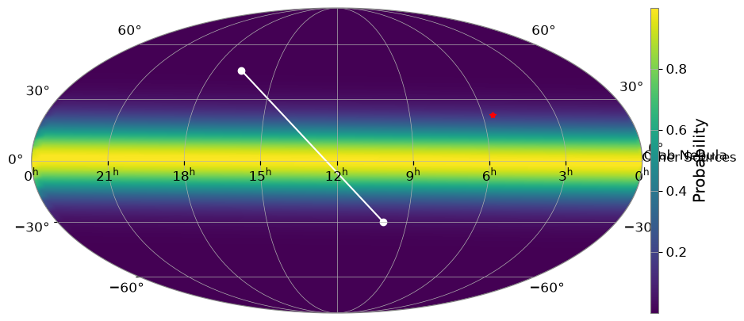

Note
This page was generated from a Jupyter Notebook. Download the notebook (.ipynb)
[1]:
# Skipped in CI: Colab/bootstrap dependency install cell.
Map Plotting: Basics

This notebook demonstrates how to use gwexpy.plot.SkyMap for all-sky HEALPix probability maps and gwexpy.plot.GeoMap for geographic maps of detector locations.
1. SkyMap: All-Sky Probability Maps
SkyMap is a specialized plotting class for displaying distributions on the celestial sphere. It integrates with ligo.skymap to easily handle HEALPix data.
[2]:
import warnings
warnings.filterwarnings("ignore", category=UserWarning)
warnings.filterwarnings("ignore", category=DeprecationWarning)
import matplotlib.pyplot as plt
import numpy as np
from gwexpy.plot import SkyMap
# Create SkyMap with Mollweide projection (default)
fig = SkyMap(figsize=(10, 5), projection="astro hours mollweide")
# Add synthetic HEALPix data if ligo.skymap is available
try:
import ligo.skymap
_ = ligo.skymap
nside = 16
npix = 12 * nside**2
# Generate a dummy central peak
map_data = np.exp(-0.5 * (np.arange(npix) - npix // 2) ** 2 / (npix // 10) ** 2)
fig.add_healpix(map_data, cmap="viridis")
except ImportError:
print("ligo.skymap not installed.")
# Mark some astronomical targets
# Crab Nebula (RA: 83.63 deg, Dec: 22.01 deg)
fig.mark_target(83.63, 22.01, label="Crab Nebula", color="red", marker="*")
# Other targets
fig.mark_target([150, 250], [-30, 45], label="Other Sources", color="white", marker="o")
plt.show()
/home/runner/micromamba/envs/gwexpy/lib/python3.11/site-packages/tqdm/auto.py:21: TqdmWarning: IProgress not found. Please update jupyter and ipywidgets. See https://ipywidgets.readthedocs.io/en/stable/user_install.html
from .autonotebook import tqdm as notebook_tqdm

2. GeoMap: Geographic Maps with PyGMT
GeoMap provides a Cartopy-like interface to PyGMT, allowing for high-quality geographic maps and easy placement of gravitational wave detectors.
[3]:
# Create GeoMap with Robinson projection centered on 135E (Japan)
try:
from gwexpy.plot import GeoMap
gmap = GeoMap(projection="Robinson", center_lon=135)
# Add map features
gmap.add_coastlines(resolution="low", color="black")
gmap.fill_continents(color="wheat")
gmap.fill_oceans(color="lightblue")
# Plot standard detectors (KAGRA, LIGO, Virgo, GEO)
for det in ["K1", "H1", "L1", "V1", "G1"]:
gmap.plot_detector(det, label=True)
# Plot an arbitrary point
gmap.plot(x=170.5, y=-23.6, marker="o", color="purple", markersize=12)
gmap.show()
except ImportError as e:
print(e)
except Exception as e:
print(f"An error occurred: {e}")
pygmt is required for GeoMap. Install with: pip install pygmt (details: No module named 'pygmt')
3. Close-up View of Japan Region
In GeoMap, you can automatically zoom in to a specific country region by specifying an ISO 3166-1 alpha-2 country code (such as ‘JP’, ‘US’, etc.) in the region argument. You can also add a scale bar to the map using add_scale_bar().
[4]:
try:
from gwexpy.plot import GeoMap
# Display Japan region (specify region='JP')
# Use Mercator projection for zoomed view, with detailed frame annotations (frame='afg')
geo_jp = GeoMap(projection="Mercator", region="JP", frame="afg")
geo_jp.fill_oceans(color="azure")
geo_jp.fill_continents(color="lightgray")
geo_jp.add_coastlines(resolution="medium") # Draw coastlines with higher resolution
# Plot KAGRA detector
geo_jp.plot_detector("K1")
# Add scale bar (500km width, at bottom-left with 0.5cm offset)
geo_jp.add_scale_bar(width="500k", position="jBL", offset="0.5c/0.5c")
geo_jp.show()
except ImportError as e:
print(e)
except Exception as e:
print(f"An error occurred: {e}")
pygmt is required for GeoMap. Install with: pip install pygmt (details: No module named 'pygmt')
Commonly Used ISO Country Codes (alpha-2)
Country |
ISO Code |
Notes |
|---|---|---|
Japan |
|
Location of KAGRA |
United States |
|
Location of LIGO (Hanford, Livingston) |
Italy |
|
Location of Virgo |
Germany |
|
Location of GEO600 |
India |
|
LIGO-India under construction |
Australia |
|
|
United Kingdom |
|